1 定义1.1 结点分类1.2 结点关系1.3 结点层次1.4 有序树/无序树1.5 森林2 存储结构2.1 双亲表示法2.1.1 以数组作为存储结构为例2.1.2 如果实际场景中更关注孩子节点，可增加相关指针，如下结构2.1.3 如果更关注兄弟节点，可优化为如下结构2.2 孩子表示法2.2.1 方案一2.2.2 方案二2.2.3 方案三2.2.4 方案四2.3 孩子兄弟表示法3 二叉树3.1 定义3.2 二叉树特点3.3 特殊二叉树3.3.1 斜树3.3.2 满二叉树3.3.3 完全二叉树3.4 二叉树性质3.5 二叉树的存储结构3.5.1 顺序存储结构3.5.2 二叉链表3.6 遍历二叉树3.6.1 前序遍历3.6.2 中序遍历3.6.3 后序遍历3.6.4 层序遍历3.7 线索二叉树3.8 树、森林与二叉树的转换3.8.1 树转换为二叉树3.8.2 森林转换为二叉树3.8.3 二叉树转化为树3.8.4 二叉树转换为森林
1 定义
树是n(n≥0)个结点的有限集。n=0时称为空树。在任意一棵非空树中： (1) 有且只有一个特定的称为根的结点。 (2) 当n>1时，其余结点可分为m(m>0)个互不相交的有限集T1、T2 .... Tm,其中每一个集合本身又是一棵树，称为根的子树。 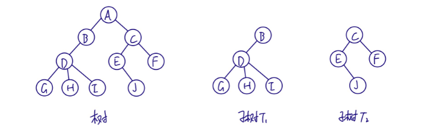
1.1 结点分类
结点拥有的子树数称为结点的度（Degree)。 度为0的结点称为叶结点或终端结点。度不为0的结点称为非终端结点或分支结点，除根节点外，分支结点也称为内部节点。 树的度是树内各结点的度的最大值。 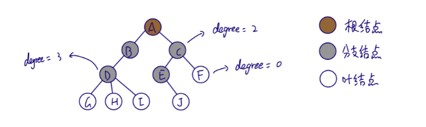
1.2 结点关系
结点的子树的根称为该结点的孩子（child），该结点称为孩子的双亲（parent)。
同一个双亲的孩子之间互为兄弟（sibling)。
结点的祖先是从根到该结点所经分支上的所有结点。
以某结点为根的子树中的任一结点都称为该结点的子孙。

1.3 结点层次
结点的层次从根开始定义起，根为第一层，孩子为第二层。 树中结点的最大层次称为树的深度（depth）或高度。 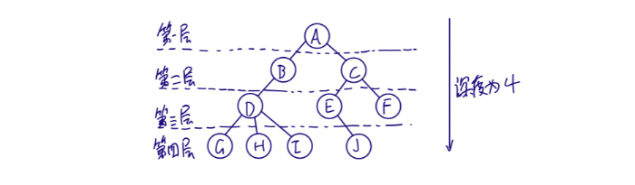
1.4 有序树/无序树
如果将树中结点的各子树看成从左至右是有次序的，不能互换的，则称树为有序树，否则称为无序树。
1.5 森林
m(m>0)棵至不相交的树的集合。
2 存储结构
2.1 双亲表示法
在每个结点中，附设一个指示器指示其双亲结点到链表中的位置。
2.1.1 以数组作为存储结构为例
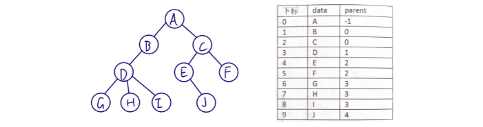 该结构可以很快找到双亲结点，但是如果要找孩子结点则需遍历整个结构。
2.1.2 如果实际场景中更关注孩子节点，可增加相关指针，如下结构
2.1.3 如果更关注兄弟节点，可优化为如下结构
总之，存储结构的设计是一个非常灵活的过程。一个存储结构设计得是否合理，取决于运算是否适合，是否方便，时间复杂度等。
2.2 孩子表示法
每个结点有多个指针域，其中每个指针指向一棵子树的根结点，称为多重链表表示法。 结点结构如下：
2.2.1 方案一
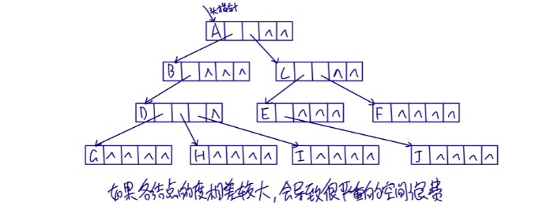
如果各结点的度相差较大，会导致很严重的空间浪费。
2.2.2 方案二
每个结点指针域的个数等于该结点的度，用专门的位置来存储结点的度。
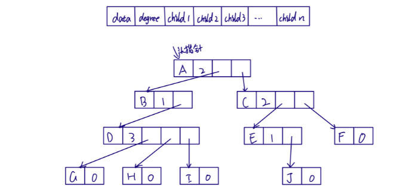 解决了空间浪费的问题，但各结点链表结构不同，加上度的维护，运算上带来了时间的损耗。
2.2.3 方案三
把每个结点的孩子结点排列起来，以单链表作存储结构，则n个结点有n个孩子链表，如果是叶子结点则此单链表为空。然后n个头指针又组成一个线性表，采用顺序存储结构，放入一维数组中。 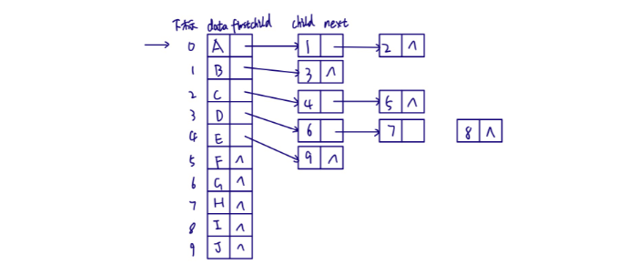
该结构对于查找孩子结点或兄弟结点，以及遍历树结构都非常方便，但是查找双亲结点却很麻烦。
2.2.4 方案四
双亲孩子表示法
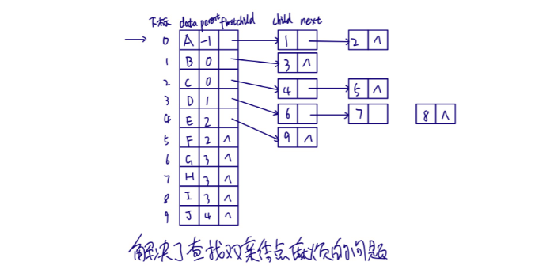
解决了查找双案结点麻烦的问题。
2.3 孩子兄弟表示法
任意一棵树，它的结点的第一个孩子如果存在就是唯一的，它的右兄弟存在也是唯一的，因此，设置两个指针，分别指向第一个孩子结点和右兄弟结点。
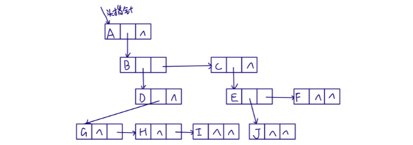查找孩子节点时，只需通过firstchild找到第一个孩子结点，然后通过rightsib查找其它孩子节点。 如果有必要，也可加入parent指针域来解决查找双亲结点的问题。
该表示法最大的好处是将一棵复杂的树变成了一棵二叉树，将上图稍做变形。 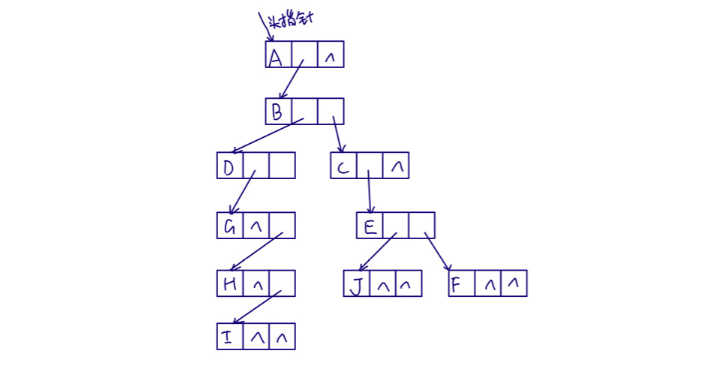
3 二叉树
3.1 定义
二又树是n(n≥0)个结点的有限集合，该集合或者为空集（称为空二叉树）,或者由一个根结点或者两棵互不相交的、分别称为根结点的左子树和右子树的二叉树组成。
3.2 二叉树特点
① 每个结点最多有2棵子树。 ② 左子树和右子树是有顺序的，次序不能任意颠倒。 ③ 即使树中某结点只有一棵子树，也要区分它是左子树还是右子树。
3.3 特殊二叉树
3.3.1 斜树
所有结点都只有左子树或者右子树
3.3.2 满二叉树
所有分支结点都有左子树和右子树，并且所有叶子节点都在同一层。
3.3.3 完全二叉树
对一棵有n个结点的二叉树按层序编号，编号为i的结点与同样深度的满二叉树中偏号为i的结点在二叉树中位置完全相同。
满二叉树一定是完全二叉树，但完全二叉树不一定是满二叉树。
完全二叉树的特点：
① 叶子结点只能出现在最下两层。 ② 最下层叶子一定集中在左部连续位置。 ③ 倒数二层，若有叶子结点，一定在左部连续位置。 ④ 如果结点度为1,则只有左子树。 ⑤ 同样结点数的二叉树，完全二叉树的深度最小。
3.4 二叉树性质
① 在二叉树的第i层上至多有2i-1个结点（i≥1)。
② 深度为k的二叉树至多有2k-1个结点（k≥1)。
③ 对任何一棵二叉树T,如果其终端结点数为n0，度为2的结点数为n2，则 n0=n2+1。
推导方式： 在二叉树T中，结点的度只有0、1、2三种情况，设其结点数分别为n0、n1、n2，则树T的总结点数为n，n=n0+n1+n2。 树结点总数为n，那么树中结点连线数为n-1，同时，度为0、1、2的结点向外分出的连线数分别为0、1、2，可得连线总数为 n1+2n2，即 n-1=n1+2n2，而 n=n0+n1+n2，得到 n0+n1+n2-1=n1+2n2，最终可得 n0=n2+1。
④ 具有n个结点的完全二叉树的深度为 |log2n|+1 (|x|表示向下取整）。 ⑤ 对一棵有n个结点的完全二叉树的结点按层序编号，对任一结点i。
- 如果i=1，则为根结点；如果i>1，则其双亲结点为|i/2|。
- 如果2i>n，则无左孩子；否则其左孩子为2i。
- 如果2i+1>n，则无右孩子；否则其右孩子为2i+1。
3.5 二叉树的存储结构
3.5.1 顺序存储结构
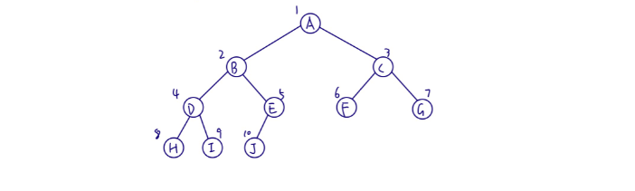
如果二叉树为斜树，那么会造成空间浪费，所以，顺序存储结构一般只用于完全二叉树。
3.5.2 二叉链表
结点数据结构

如果有需要，可以再增加一个指向其双亲的指针域，称为三叉链表。
3.6 遍历二叉树
从根结点出发，按照其种次序依次访问二叉树中所有结点，使得每个结点被访问且仅被访问一次。
3.6.1 前序遍历
若二叉树为空，则空操作返回，否则先访问根结点，然后前序遍历左子树，再前序遍历右子树。
3.6.2 中序遍历
若二叉树为空，则空操作返回，否则从根结点开始（注意不是先访问根结点）,中序遍历根结点的左子树，然后访向根结点，最后中序遍历右子树。
3.6.3 后序遍历
若树为空，则空操作返回，否则从左到右先叶子后结点的方式遍历右子树，最后访问根结点。
3.6.4 层序遍历
若树为空，则空操作返回，否则从树的第一层，从上而下遍历访问，在同一层中，从左到右逐个访问。
3.7 线索二叉树
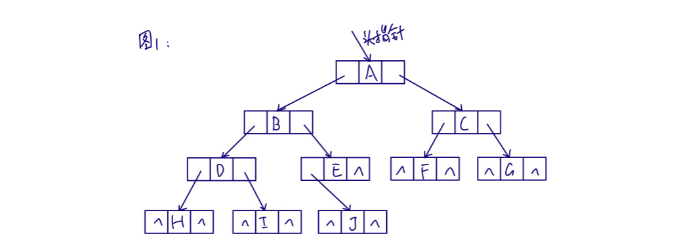
对于图中二叉树结构，如果有n个结点，那么共有2n个指针城，有n-1条线，那么肯定会存在2n-(n-1)=n+1个指针域为空指针域，造成资源浪费。
同时，只有在遍历时才能知道每个节点的前驱和后继节点。
为了解决上述问题，我们可以在构建二叉树时就维护结点的前驱和后继指针，将这两种指称为线索，对应的二叉树称为线索二叉树。
构建二叉树时我们可以以不同的方式构建，下面以中序遍历为例。
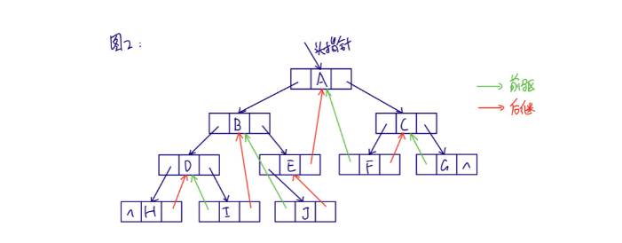
经过中序遍历处理后，lchild空指针改为前驱指针，rchild空指针改为后继指针，最后只剩下链表的首尾有2个空指针域未被使用。
但图2中结构仍存在问题，那便是无法区分lchild是左孩子指针还是前驱指针，rchild是右孩子指针还是后继指针。可以通过添加标识域来区分。
3.8 树、森林与二叉树的转换
树的孩子兄弟法可以将一棵树以二叉链表进行存储，借助二又链表树和二叉树可以相互转换。
3.8.1 树转换为二叉树
① 加线。在所有兄弟结点之间加一条连线。 ② 去线。对树中每个结点，只保留它与第一个孩子的连线，删除与其他孩子的连线。
③ 层次调整，以树的根结点为轴心，将整棵树顺时针旋转一定的角度，使其结构层次分明。注意第一个孩子是二叉树结点的左孩子，兄弟转换过来的孩子是结点的右孩子。
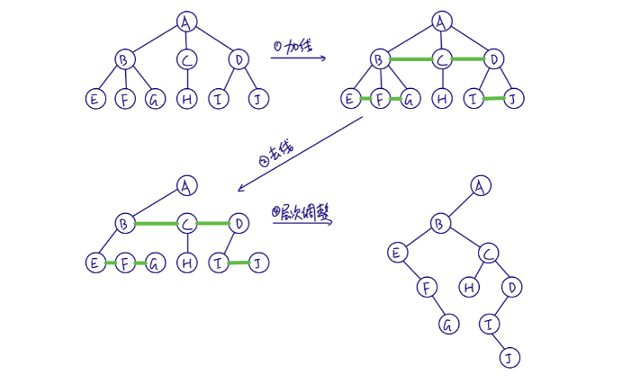
3.8.2 森林转换为二叉树
① 将每个树转换为二叉树。
② 第一棵树不动，从第二棵树开始，依次将其根结点作为前一棵树的右孩子结点。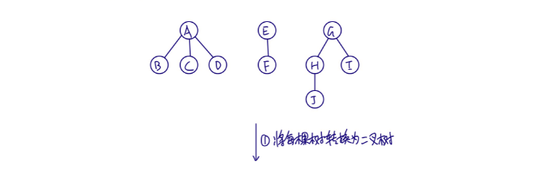
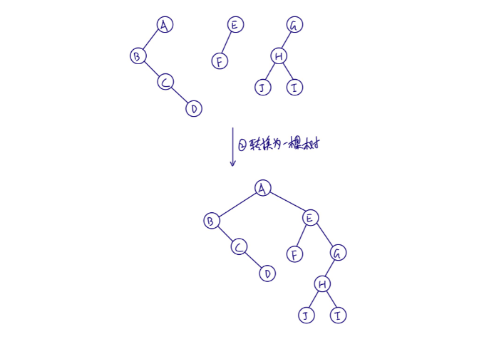
3.8.3 二叉树转化为树
① 加线。若某结点存在左孩子，将左孩子的所有右孩子结点都作为此结点的孩子。 ② 去线。删除树中所有结点与右孩子的连线。 ③ 层次调整。
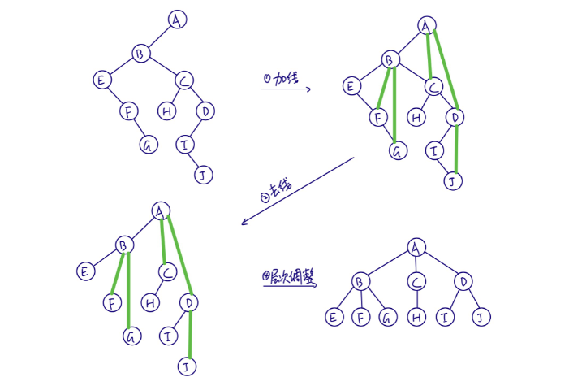
3.8.4 二叉树转换为森林
① 从根结点开始，若右孩子存在，则把与右孩子的连线删除，再查看分离后的二叉树，若右孩子存在，则连线删除....直到所有的右孩子连线全都删除。 ② 将每棵二叉树转换为树。
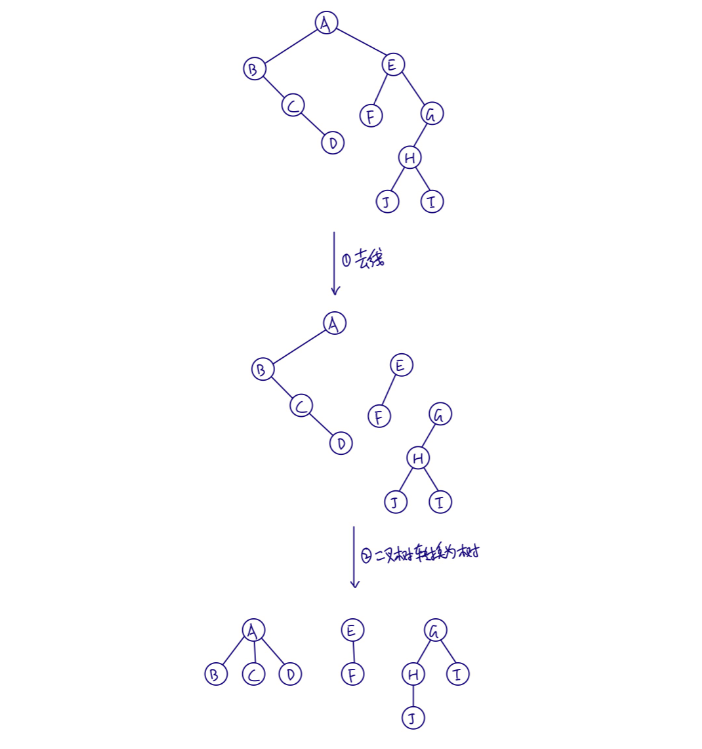